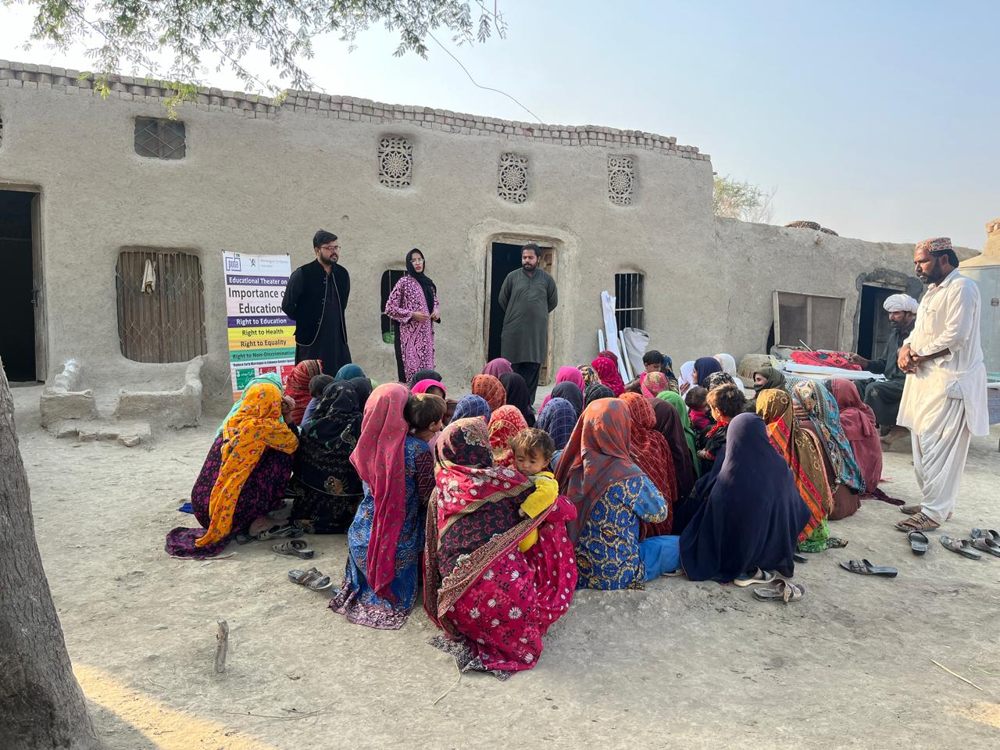

Civic Voice & Education
Civic education, digital literacy and youth empowerment that build informed, active citizens.
PODA is a registered non-profit whose mission is to make a difference in the lives of rural women, youth and minorities — primarily through education, legal literacy and rights-based advocacy. We work to transform mind, body and soul, and to educate and equip citizens of Pakistan through scholarships, training and grassroots organizing.

From civic education to disaster response — the core areas PODA works in across rural Pakistan.
A sample of recent activity and documented stories — see everything on the Activities and Stories archives.
Every contribution helps PODA deliver legal aid, education and disaster response to rural women and youth across Pakistan.
Fund legal aid clinics, conferences and disaster response for rural communities.
Make a DonationFree legal aid helpline for women and communities who need it most.
Legal Aid HelplineJoin PODA's field teams and gain hands-on experience in rural development.
View Internships